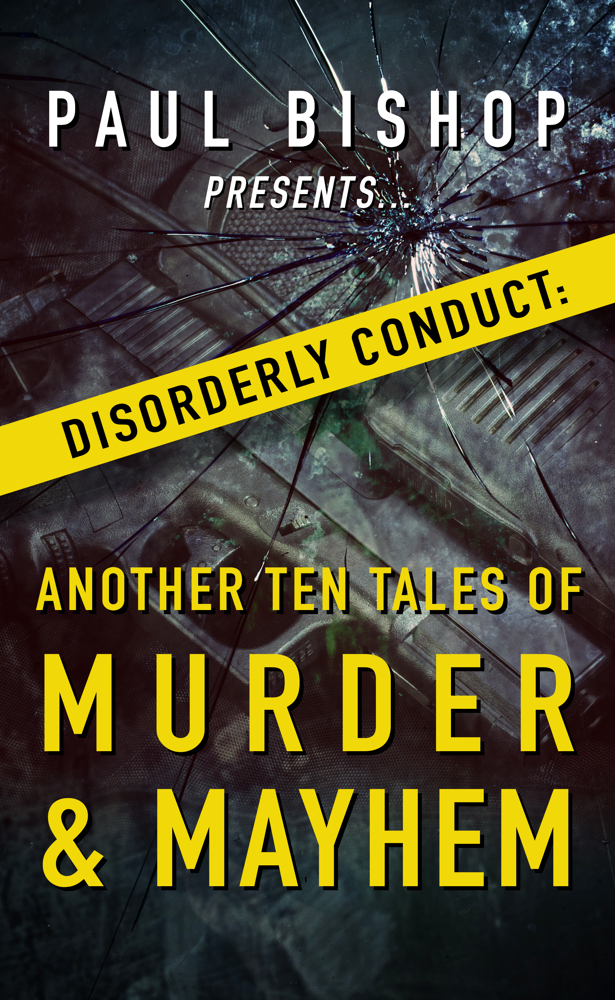
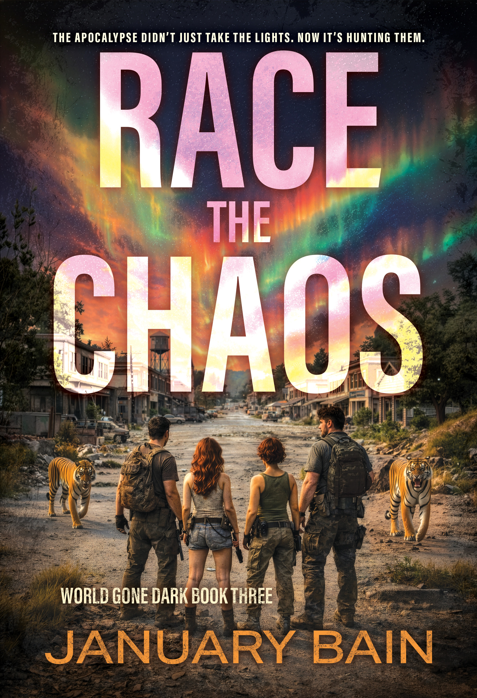

| View in browser |
 |
New from Rough Edges Press: ten tales of murder and mayhem meet a post-apocalyptic survival thriller where heat, scarcity, outlaw bikers, and an ancient plague turn every choice deadly.Hard-edged thrillers, crime stories, and danger that does not wait politely. |
|

Disorderly Conductby Paul Bishop
Paul Bishop gathers ten crime writers for a collection that follows disorderly behavior down the rabbit hole into assault, armed robbery, murder, and mayhem. Each story explores the criminal spark that can turn a bad decision into something far more dangerous.
Get Your Copy →
|
| |

Race the Chaos (World Gone Dark 3)by January Bain
With brutal heat, failing water supplies, escaped tigers, and an outlaw motorcycle club closing in, Burgundy must seek help from the one man she cannot afford to owe. Then the radio brings worse news: an ancient plague released from Greenland’s melting ice is spreading.
Get Your Copy →
|
|
Rough Edges Press 1707 E. Diana Street, Tampa, FL 33610 Website Unsubscribe |
|